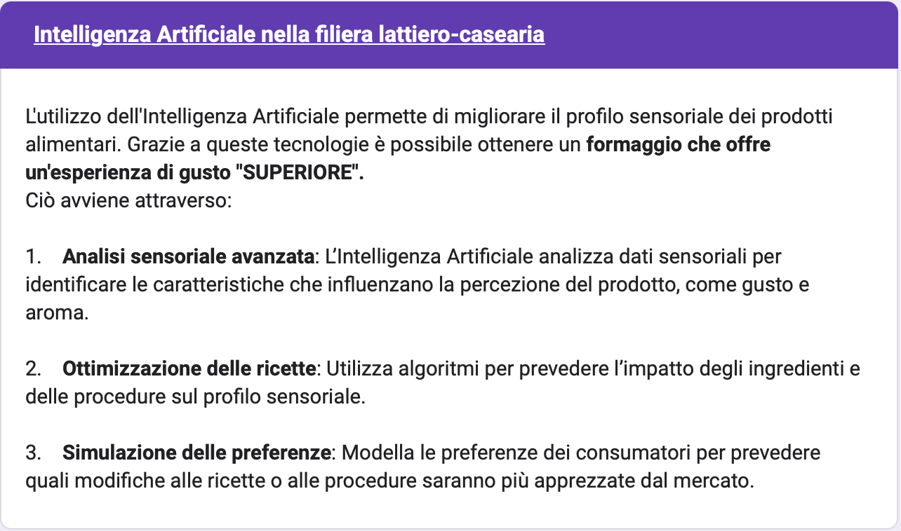

Una Ricerca di Marketing
Immaginiamo di essere un’azienda che produce formaggi e stiamo pensando di introdurre l’Intelligenza Artificiale nel nostro processo produttivo. Prima però di investire tempo e risorse, vogliamo capire in quali ambiti questa tecnologia sarebbe più apprezzata dai nostri clienti e come verrebbe percepita: positivamente o con diffidenza? In altre parole: i consumatori sarebbero disposti a pagare di più, di meno… o lo stesso?Il Questionario


Statistiche Descrittive
descriviamo il nostro campione per contestualizzare i risultati che stiamo per raccontareN = 200
n = 93 (Gusto)
n = 107 (Sicurezza)
Risultati
per quale utilizzo è più apprezzata l'IA?Standard
+€0.01
Superiore
+€0.15
Superiore con IA
+€0.48
In generale
-€0.41 per IA
Dati i risultati ottenuti, quale scelta dovremmo fare?
Strumenti consigliati
- Google Moduli: Creare il questionario e somministrarlo online gratis
- Microsoft Excel o SPSS: Analizzare i dati e creare grafici gratis per studentə UNINA!
- Flourish: Gra(n)fico freemium
- ChatGPT: Sempre tuo amico üôè un giorno lavorerai per lui